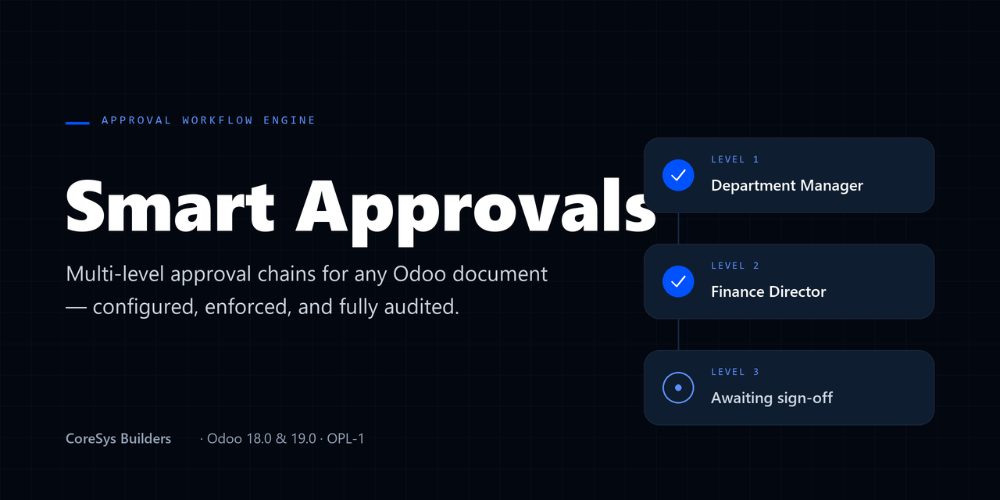

Smart Approvals routes any record through a configurable, multi-level approval chain — enforced at the ORM boundary, recorded in an immutable audit trail, and surfaced to each approver in a personal To Approve inbox. Configure the process once; the engine holds the line everywhere.
Built for Odoo 18.0 and 19.0 Community. The engine depends only on base and mail — nothing to pip install, no build step.
Define an approval category once, give it as many sequential levels as the process needs, and point each level at an approver group or named users. No per-workflow custom development.
Requests move through draft, submitted, approved, and refused along one controlled path. Any write that would skip a step or forge a decision is rejected at the ORM boundary — the process cannot be routed around from an import, a script, or a crafted context.
Each decision is a create-only response line: who acted, at which level, the outcome, and the reason. Records cannot be edited or deleted afterward, even by an administrator — exactly what an auditor expects to see.
An approver going on leave can delegate authority for a date window. Delegated approvals are attributed to both the delegate who acted and the original approver, so the trail stays honest.
Every approver gets a filtered list of what is waiting on them right now, backed by native Odoo to-do activities so reminders appear where users already look. Chatter on every request keeps a human-readable timeline beside the structured log.
The bundled Purchase bridge holds a purchase order at confirmation until its approval chain clears — a working demonstration of how the engine plugs into a real Odoo workflow, ready to use out of the box.
Captured from the shipped demo scenario — a mid-size buyer routing a capital-expenditure purchase order through department and finance sign-off.
Odoo 18.0 Community · Supported
Odoo 19.0 Community · Supported
Installs by copying into your addons path — no external dependencies, no requirements.txt.
Questions, licensing, or help with a rollout — coresysbuilders.com.
CoreSys Builders — Smart Approvals. Licensed OPL-1.